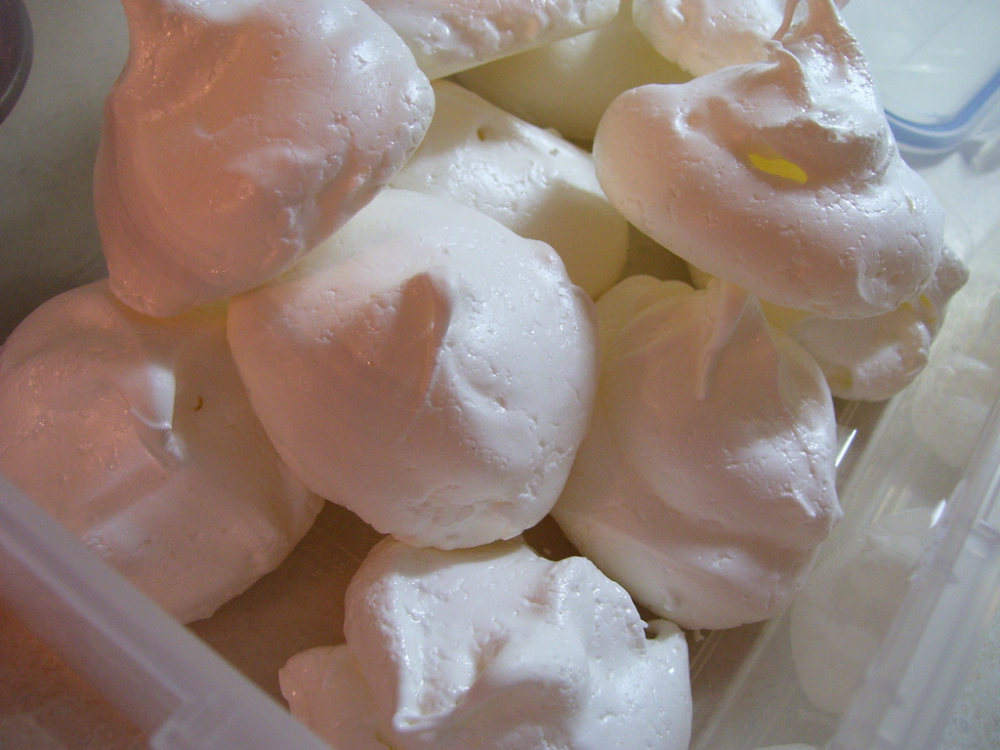

Meringues
Ingredients
- 4 egg whites
- 1/2 tsp cream of tartar
- 1 cup of granulated or superfine sugar
- splash of vanilla
- pinch of salt
Special Equipment
- Electric mixer
March 6, 2010
So I made a big batch of gnocchi which left me with 4 spare egg whites, so I decided to make meringues. I have never made meringues successfully before and I am not entirely sure about this batch either. Maybe I just don’t really like meringues? Don’t get me wrong, they are okay and all, but they’re kinda sticky and chewy and it gets in my teeth and they are way too sweet for my preference for a cookie. It may be too humid here in Ontario, but I don’t think so, because it is currently winter time and is fairly dry. I’d say these meringues were 90% successful. Those who like very sweet, chewy treats may like them more than me.
- In a large bowl (the egg whites expand to several times their volume when beating), beat egg whites with an electric mixer on medium speed for about 30 seconds, or until they begin to get foamy.
- Add cream of tartar and continue beating until soft peaks form (mixture is fairly shiny and hold their shape somewhat, but when you pull up the beater, the peak will flop down).
- Turn speed up to high and add sugar a bit at a time while beating until stiff peaks form (mixture is shiny and smooth looking, and when you pull up the beater, the egg whites will stand up straight and hardly flop over at all). Rub some mixture between your fingers and it should not be gritty from the sugar. If it is, let it sit for 5 minutes then beat some more. Repeat until grit is pretty much gone.
- Drop by mounds approximately 6 cm diameter onto a parchment paper lined baking sheet. Cookies will not expand during baking so you can place them fairly close together (I managed 8 per sheet). Bake them in a 200*F oven for 1.5-2 hours, then turn off the heat and leave in the oven until cool. Store in an airtight container, and if you have some silica packets to absorb moisture, go ahead and use those, since these cookies deteriorate quickly when kept in moist conditions.